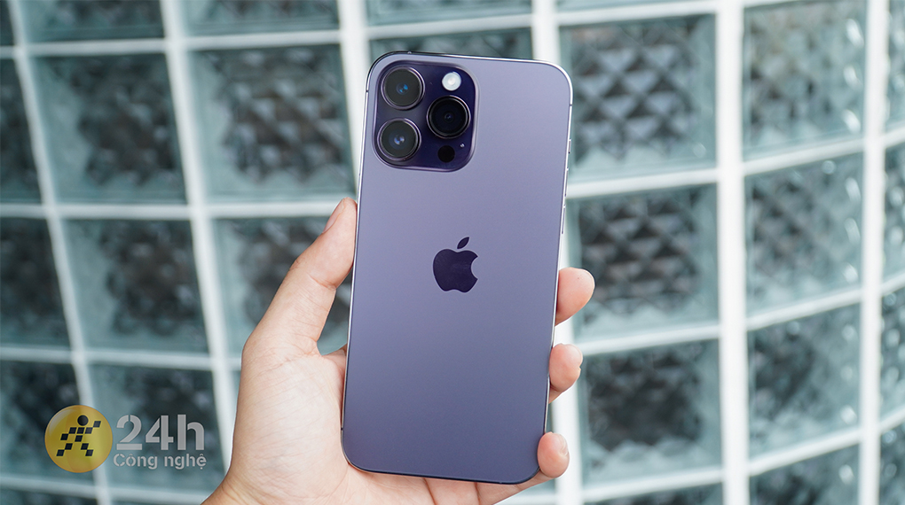

IPHONE 14 PRO MAX 256GB
IPHONE 14 PRO MAX 256GB
Màu Sắc: Đen; Trắng; Gold; Tím.
Sản phẩm Sang Mobile cam kết:
✅ Vỏ máy và kính của máy đẹp như máy mới, khách hàng có thể xem ảnh chụp trực tiếp
trên website. Chúng tôi tự tin là các sản phẩm có hình thức không khác biệt so với máy mới.
✅ Đảm bảo đầy đủ các chức năng và đặc biệt bao lock trọn đời máy.
✅ Sản phẩm đạt chất lượng và hiệu năng cao nhất thị trường bởi đội ngũ test máy chuyên nghiệp chất
lượng.
Điểm nổi bật của iPhone 14 Pro Max 128GB Quốc Tế:
iPhone 14 Pro Max một siêu phẩm trong giới smartphone được nhà Táo tung ra thị trường vào tháng 09/2022. Máy trang bị con chip Apple A16 Bionic vô cùng mạnh mẽ, đi kèm theo đó là thiết kế hình màn hình mới, hứa hẹn mang lại những trải nghiệm đầy mới mẻ cho người dùng iPhone
Thiết kế cao cấp bền bỉ
iPhone năm nay sẽ được thừa hưởng nét đặc trưng từ người anh iPhone 13 Pro Max, vẫn sẽ là khung thép không gỉ và mặt lưng kính cường lực kết hợp với tạo hình vuông vức hiện đại thông qua cách tạo hình phẳng ở các cạnh và phần mặt lưng.

Dòng Pro năm nay được ra mắt với nhiều tùy chọn màu sắc và trong đó nổi bật nhất có lẽ là phiên bản Deep Purple (tím), bởi vì đây là một màu mới nên mang lại độ nhận diện khá cao.
Nổi bật với thiết kế màn hình mới
Điểm ấn tượng nhất trên điện thoại iPhone năm nay nằm ở thiết kế màn hình, có thể dễ dàng nhận thấy được là hãng cũng đã loại bỏ cụm tai thỏ truyền thống qua bao đời iPhone bằng một hình dáng mới vô cùng lạ mắt
So với cụm tai thỏ hình notch năm nay đã có phần tiết kiệm diện tích tương đối tốt, nhưng khi so với các kiểu màn hình dạng “nốt ruồi” thì đây vẫn chưa thực sự là một điều quá tối ưu cho phần màn hình. Thế nhưng Apple lại rất biết cách tận dụng những nhược điểm để biến chúng trở thành ưu điểm một cách ngoạn mục bằng cách phát minh nhiều hiệu ứng thú vị.
Để làm cho chúng trở nên bắt mắt hơn Apple cũng đã giới thiệu nhiều hiệu ứng chuyển động nhằm làm tăng sự thích thú cho người dùng, điều này được kích hoạt trong lúc mình ấn giữ phần hình notch khi đang dùng các phần mềm hỗ trợ như: Nghe nhạc, đồng hồ hẹn giờ, ghi âm,...
Hiển thị nội dung chân thực hơn thông qua màn hình chất lượng
Từ trước đến nay, tấm nền OLED luôn được cộng đồng người dùng đánh giá rất cao khi xuất hiện trên các dòng sản phẩm của Apple, với chiếc iPhone 14 Pro Max điều này cũng không là ngoại lệ khi hình ảnh mà máy mang lại hết sức chân thực.
Nhìn vào màn hình ta sẽ thấy được một độ trong trẻo vô cùng thích mắt, nội dung hiển thị có chiều sâu, cảm giác khi xem phim hay chơi game cũng trở nên sống động hơn.
Điểm vượt trội nhất mà các loại tấm nền khác khó mà đạt được là độ chuẩn các về màu sắc cao, mình cũng đã sử dụng iPhone 14 Pro Max để thiết kế một vài ấn phẩm như poster hay sticker đơn giản và thành quả lúc in ra sau khi đối chiếu lại với ảnh trên điện thoại thì gần như là bằng nhau, độ sai lệch không quá đáng kể giúp mình an tâm hơn trong việc thiết kế hình ảnh.
Độ phân giải màn hình đạt mức 2796 x 1290 Pixels nên việc tái tạo hình ảnh có độ chi tiết cao là điều hết sức dễ dàng, hiện tượng như rỗ màn hình là điều mà mình chưa từng thấy xuất hiện trên điện thoại trong 2 tuần trải nghiệm.
Hỗ trợ tính năng Always On Display
Bên cạnh sự đổi mới về hình notch, năm nay Apple còn trang bị cho dòng Pro và Pro Max thêm công nghệ màn hình Always On Display, điều này cho phép thiết bị không tắt màn hình hẳn mà vẫn hiển thị màn hình khóa với một độ sáng khá nhỏ, đủ để mình có thể đọc thông báo nhanh xem ngày giờ khá thuận tiện.
Tuy nhiên màn hình lúc này khá tối nên dùng ngoài trời sẽ hơi khó nhìn đôi chút. Bên cạnh đó, tính năng này cũng sẽ giảm tuổi thọ pin hơn so với thông thường, để điện thoại qua đêm khoảng 7 tiếng ở chế độ Always On Display thì máy mất khoảng 3 - 4% dung lượng pin.
Tần số quét 120 Hz
iPhone 14 Pro Max có tần số quét rất cao vậy nên mọi thao tác hằng ngày của mình đều được phản hồi nhanh chóng, cảm giác vuốt chạm cũng trở nên thích hơn, hiện tượng khựng hay độ trễ trong lúc vuốt đã được cải thiện đáng kể so với những chuẩn màn hình 60 Hz.
Ngoài ra, Apple còn bổ sung tùy chọn để giúp bạn có thể dễ dàng điều chỉnh tần số quét lên 120 Hz hay xuống 60 Hz tùy vào nhu cầu sử dụng, phù hợp để dùng trong những tình huống khẩn cấp như đang muốn tiết kiệm pin nhằm đảm bảo thiết bị có thể duy trì sử dụng dài lâu.
Độ sáng 2000 nits
So với những đối thủ khác trong phân khúc thì độ sáng 2000 nits được xem là ưu điểm vượt trội mà ít có hãng nào có thể sánh kịp, thế liệu nó giúp ích được gì và có thực sự hiệu quả hay không chắc hẳn là điều được rất nhiều người thắc mắc.
Cụ thể là màn hình có độ sáng cao đã giúp ích cho mình rất nhiều trong mọi nhu cầu sử dụng hằng ngày của mình, kể từ khi sử dụng iPhone 14 Pro Max việc xem bản đồ khi đang ở ngoài đường lúc trời nắng gắt cũng trở nên dễ dàng, màn hình lúc này không quá sập tối hay lóa, các thông báo chỉ dẫn đường đi cũng đều được thể hiện rõ ràng.
Bên trong điện thoại sẽ được tích hợp viên pin có dung lượng lên tới 4323 mAh nên mình cũng đã an tâm hơn trong việc sử dụng máy phục vụ các tác vụ cơ bản cả ngày. Cụ thể là trong một ngày trải nghiệm máy mình đã mất khoảng 7 giờ 23 phút sử dụng liên tục để có thể dùng hết 100% pin trên điện thoại.
Với những bạn đang mong muốn có cho mình một thiết bị có ngoại hình đẹp, hiệu năng cao và kể cả chụp ảnh quay phim chuyên nghiệm thì iPhone 14 Pro Max có thể coi là sự lựa chọn rất phù hợp cho năm 2022 và 2023 sắp tới. So với những gì mà thiết bị mang lại cho chúng ta thì mức giá bán của điện thoại được xem là cực kỳ xứng đáng.